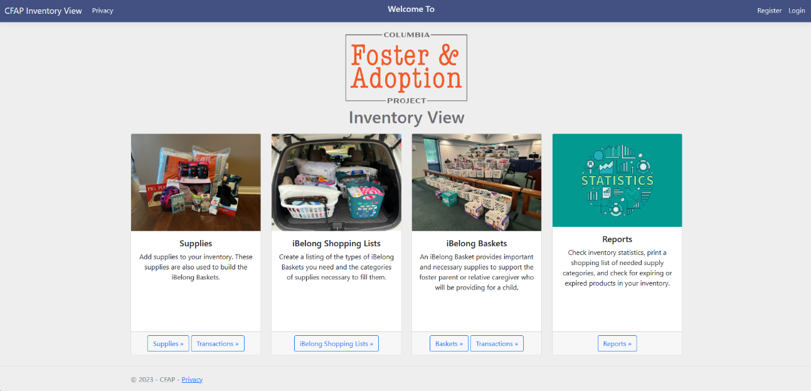

CFAP Inventory View
This was my capstone project that I created alongside Travis Jenkins, Jeremiah Gantt, and Travis Kelley. It was a web application created for the Columbia Foster and Adoption Agency. This nonprofit has an iBelong basket program that allows people to donate money/supplies that are given to children. Our web application allowed them to edit the list of supplies, access donator info, create baskets, track expiration dates and locations of items, etc. This project utilized C#, HTML, CSS, SQL, Github, ASP.net, Bootstrap, Entity Framework 7, and Razor.
Continuity Narrative
This is a project from a digital storytelling class, a 1-3 minute silent narrative with no more than three characters and two locations. The emphasis of the project was on creating continuity through shot selection and editing. The only audio allowed was music. My group made our own spin on the Chef Boyardee rolling can commercial, using the campus and our professor having an acting role as well. This project taught me a lot about using angles, setting, and motion to tell a story. Image below is a placeholder while I wait for my friend to respond with a link to the project.
Project 3
This project is a VR game that I created as a final project with Ryland Dohm. The project was a fully playable escape room, with puzzles, interactable objects, hidden areas, and more. The google slides presentation below from the final submission describes the project in great detail.